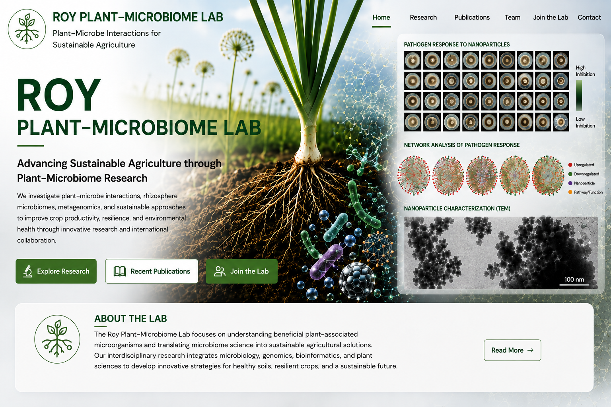
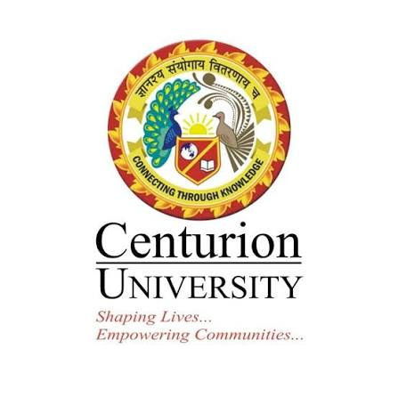

Home

Roylawar Plant–Microbiome Laboratory
Advancing Sustainable Agriculture through Plant–Microbiome Research
Welcome to the Roylawar Plant–Microbiome Research Laboratory, where we explore the fascinating interactions between plants and microorganisms to develop sustainable solutions for agriculture. Our research integrates microbiology, molecular biology, ecology, bioinformatics, and biotechnology to improve crop productivity and resilience.
Research Focus
🌱 Rhizosphere Microbiome
Understanding the diversity and function of microbial communities associated with plant roots.
🧬 Plant–Microbe Interactions
Investigating beneficial microbial interactions to improve crop productivity and resilience.
🧅 Wild Allium Biology
Exploring wild Allium species as valuable genetic and microbiome resources.
🦠 Metagenomics & Microbial Ecology
Applying next-generation sequencing to characterize complex microbial communities.
🧪 Synthetic Microbial Communities
Designing SynComs for sustainable crop production and disease management.
🌾 Climate-Resilient Agriculture
Developing microbiome-based strategies for sustainable and climate-resilient farming.
📊 By the Numbers
👨🎓
3
Research Scholars
📄
14+
Publications
🌍
4
Collaborating Institutions
🔬
2
Active Projects
🌍 Research Collaborations
University of Helsinki
International Research Partner
Department of Microbiology
Helsinki, Finland
ICAR – Directorate of Onion and Garlic Research
Research & Training Partner
Rajgurunagar, Pune, Maharashtra, India
Savitribai Phule Pune University
Academic Partner
Pune, Maharashtra, India

Centurion University of Technology and Management
Research Collaborator
Odisha, India
🔬 Current Research
- Characterization of rhizosphere microbiomes of wild Allium species
- Microbial ecology using next-generation sequencing
- Synthetic microbial community development (SynComs)
- Biofertilizer–microbiome interactions
- Climate-resilient agriculture
- Biological control of plant diseases using beneficial microbes
📢 Latest Highlights
- International collaborations in Finland and India
- Multi-omics research on plant microbiomes
- Development of microbial consortia for sustainable agriculture
- Student training in advanced molecular biology and bioinformatics
- International Ph.D. student exchange programmes
- Ongoing collaborations with ICAR-DOGR and University of Helsinki
🔗 Explore the Website
- 📖 Learn about our research programmes
- 👨🔬 Meet our research team
- 📚 Browse publications
- 📢 Read laboratory news
- 🌱 Explore opportunities to join the laboratory
- 📬 Contact us for collaborations and research enquiries